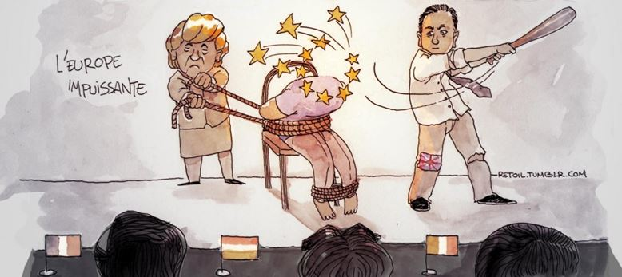
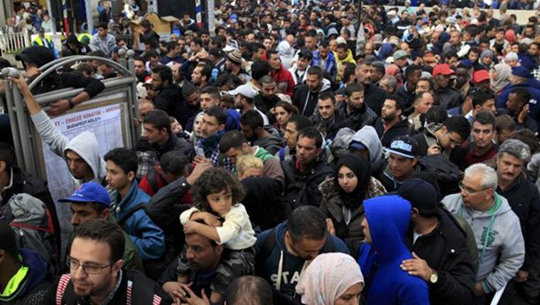
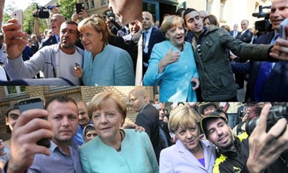
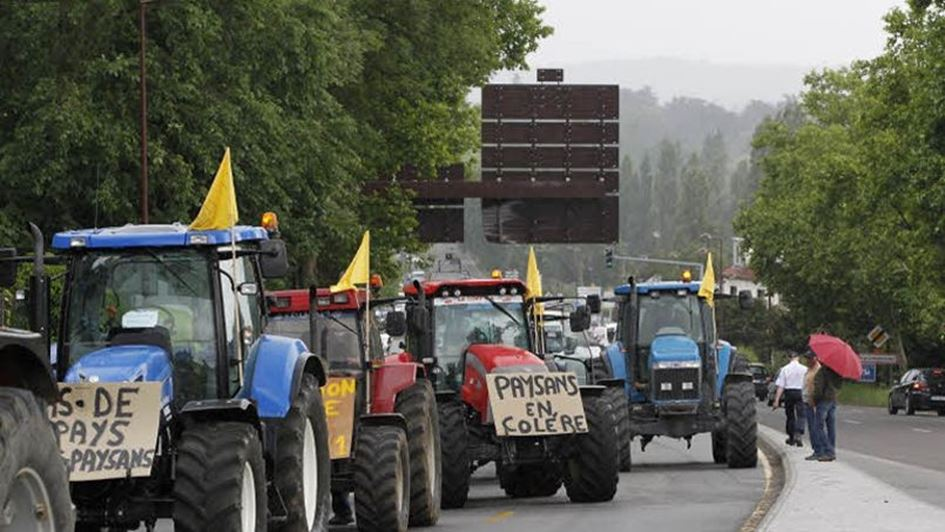

Pauvre Europe avec sa collection de nains qui ont ligoté avec les bandelettes de l’impuissance le géant qui avait conquis le monde. Il est fréquent dans l’Histoire que les visées des politiques les conduisent au résultat inverse de celui qu’ils voulaient obtenir. La construction européenne n’échappe pas à ce paradoxe. Après les deux guerres européennes devenues mondiales, l’Europe épuisée a laissé la place à la compétition entre l’URSS et les USA. Divisée entre ces deux puissances, elle ne devait sa liberté à l’Ouest qu’à la protection des Etats-Unis. Après l’effondrement soviétique, l’Union Européenne pouvait rejeter à jamais les guerres fratricides du continent, étendre son unité et retrouver ainsi les moyens de son indépendance, pourquoi pas de sa puissance, toute pacifique, bien entendu. Une densité de population bien formée avec 7 % de la population mondiale (500 millions) sur un espace restreint, des capacités économiques considérables avec 24 % du PIB mondial, permettaient d’assurer le retour de l’Europe. La stratégie de Lisbonne annonçait un continent champion de la recherche et de la compétitivité. Nous en sommes loin. Le rêve s’est dissipé pour laisser la place au vide creusé par les échecs et les frustrations.
L’Europe pouvait se contenter d’être un espace économique. Elle a prétendu devenir un super-Etat politique. Il faut rappeler une fois encore l’idéologie des trois fonctions propre aux Indo-européens : le spirituel, d’abord ; la force militaire ensuite ; la prospérité matérielle, enfin. Un Etat est une structure politique qui doit créer les conditions de possibilité du bien-être matériel de ses ressortissants, assurer l’indépendance du pays et la liberté des citoyens, au besoin par la force et qui obéit à des valeurs qui inspirent son droit et sa politique. En abandonnant toute référence aux valeurs chrétiennes, en continuant à se placer sous la dépendance militaire américaine et en ne paraissant s’intéresser à des questions que sous l’angle de l’économie, l’Europe n’est pas un Etat, c’est une machine à paralyser les Etats qui la constituent. Si l’Europe consiste à transformer les Chefs des Etats du continent en banquiers endettés et en marchands de tapis prêts à tous les marchandages, il était inutile et préjudiciable de la réaliser.
Le déferlement des « migrants » présenté comme un geste moral indispensable a été le résultat lamentable d’une défaillance des trois fonctions. L’Europe n’a jamais été musulmane. L’Islam par la conquête a dominé pendant quelques siècles le sud de l’Espagne où une civilisation s’est établie et moins longtemps et plus superficiellement le sud-est de l’Europe.
Cette influence marginale n’a jamais atteint le cœur de la culture européenne qui est profondément helléno-chrétienne. Il fallait avoir le courage de le rappeler. Il faut aujourd’hui avoir la lucidité de limiter une immigration musulmane dont on voit bien qu’elle a de la peine à s’intégrer, dans la mesure où ses valeurs ne sont pas celles des européens. C’est vrai des rapports entre les hommes et les femmes. C’est vrai du lien entre la politique et la religion. C’est vrai du jugement porté sur la violence. L’abstraction accueillante des Droits de l’homme se heurte au mur de la diversité contrariante. La domination et la soumission ont dans l’Islam un rôle et un sens importants qu’elles ne revêtent pas dans la religion chrétienne. Aussi la peur de mener une guerre d’anéantissement contre l’Etat islamique, maintenant en Libye, à proximité de l’Italie, la proposition irresponsable d’accueillir les réfugiés des combats que nous refusons d’engager, le tribut payé à la Turquie pour contenir le flot d’immigration (3 milliards d’euros), les prosternations dérisoires des européens devant les exigences des potentats musulmans, sont autant de signes de faiblesse et donc d’encouragement à l’adversaire, l’islamisme. La morale a bon dos. La courtoisie italienne est un trompe-l’œil.
Si Madame Merkel accueille les migrants, c’est pour combler le déficit démographique de l’Allemagne et répondre aux besoins de main-d’œuvre de son économie. Si M. Renzi cache les nudités statuaires romaines, c’est pour s’assurer des contrats auprès des Iraniens. A ce jeu, on perd son âme et le respect de ses partenaires.
Les hommes ne sont pas interchangeables et un marché se gagne par le rapport qualité/prix d’un produit, non par la politesse du vendeur.
La même défaillance se retrouve dans nos relations avec la Russie. En suivant aveuglément la politique américaine, nous avons rompu les liens naturels qui nous unissent à elle dès lors qu’elle a abandonné le totalitarisme marxiste. La Russie participe à la même civilisation chrétienne et elle est en pleine renaissance spirituelle. Elle possède une armée puissante qui ne nous menace nullement et qui devrait être notre alliée contre le terrorisme. Le trafic d’armes à destination des djihadistes par la Turquie auquel les occidentaux prêtent la main est une honte et une bêtise. La complémentarité entre la Russie et ses matières premières, et l’Europe est évidente. Les agriculteurs français paient en partie les conséquences de l’embargo russe qui répond à des sanctions injustifiées. Non seulement le marché russe s’est fermé, mais la concurrence s’est accrue entre les européens qui l’ont perdu. Victimes du surcroît des charges et de l’emploi massif des travailleurs européens détachés par leurs concurrents, allemands par exemple, nos producteurs de viande ou de fruits et légumes voient l’Europe non plus comme un soutien, mais comme une menace.
L’Union européenne devait créer une synergie entre les nations, rapprocher leurs systèmes juridiques et fiscaux, assurer une péréquation économique et sociale. En fait, la concurrence entre pays et le chacun pour soi n’ont pas cessé, ce qui n’a rien d’étonnant. Les Allemands continuent à bénéficier d’une monnaie plus faible que ne le serait le Mark. Les Britanniques exigent davantage de dérogations. Ce qui est plus inquiétant, c’est la passivité d’un continent qui semble subir aujourd’hui une Histoire qu’il avait naguère construite.
Partager cette page